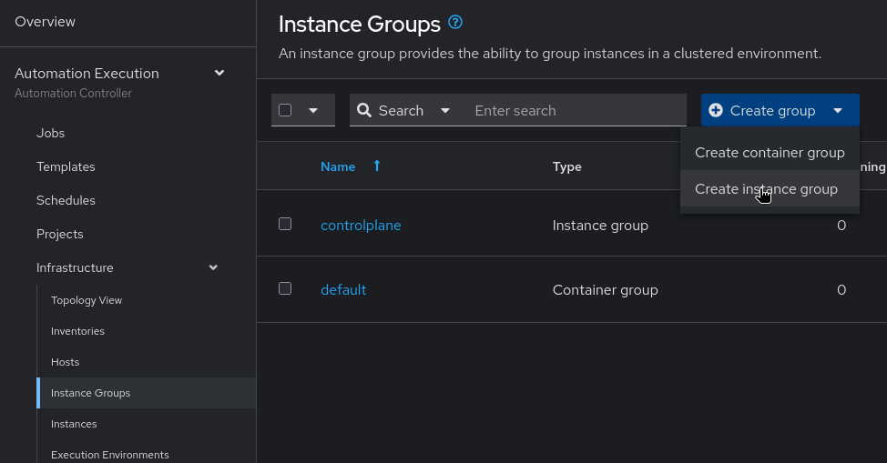
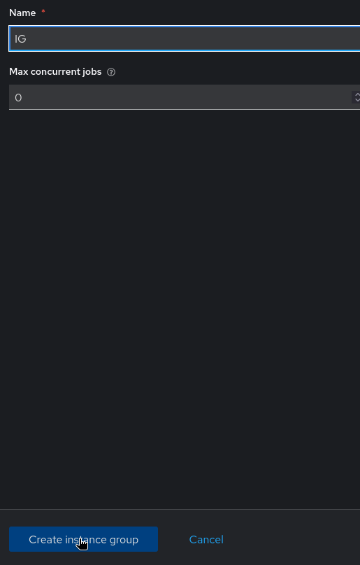
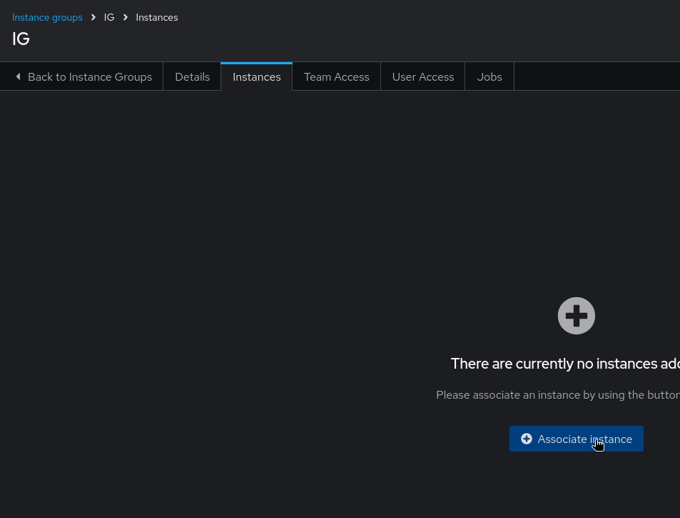
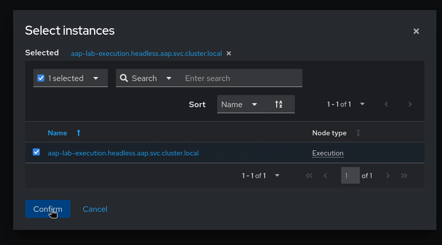
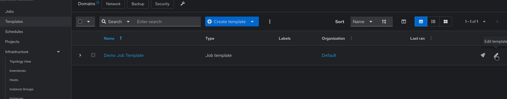
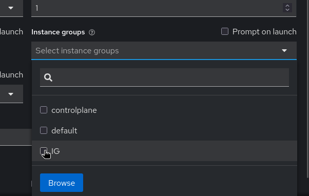
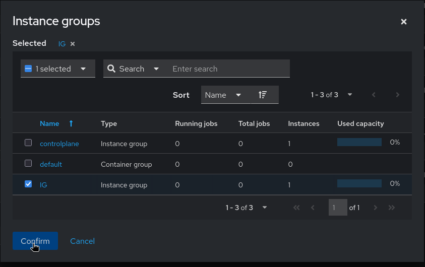
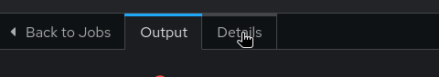
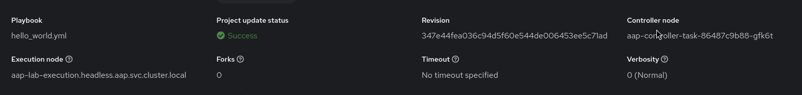

Ansible Automation Platform 2.7 Job run on execution nodes:
Part 1: Create a Instance Group:
-
Navigate to Automation Execution > Infrastructure > Instance Groups.
-
Click Create group and select Create instance Groups.
-
Enter
IGas the name and then go to the Instances tab and add the Instance you created in the previous step. Click Save.

-
Assign the Instance to this Instance Group and click on
aap-lab-execution.headless.aap.svc.cluster.localand then Confirm the selection.

Part 2: Run a Job Using the Instance Group
-
In the AAP UI, navigate to Automation Execution > Templates.
-
Click the edit (pencil) icon on the Demo Job Template to open its settings.

-
Click Instance groups and select
IG, then save the template.

-
Launch the Demo Job Template.
-
In the AAP UI navigate to Automation Execution > Jobs, select the running job and check the Details section to verify it is executing via the Instance group via the execution node.

